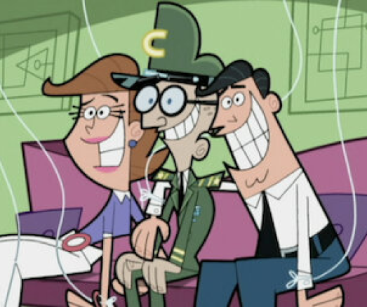

Episódios
Os Padrinhos mágicos
1. Anti Poof
Wanda sente uma nova ameaça: o nascimento de Foop, o oposto antifada de Poof. Depois de arruinar o Mundo Antifadas, Foop está de olho no Mundo das Fadas e na Terra!

2. Acrescente um pai/Esquilinhos e Bombas de Creme
Wanda sente uma nova ameaça:

3. Ratoescapáveis/A Fórmula do Desastre
Poof transforma Timmy e Vicky em personagens de desenho animado.